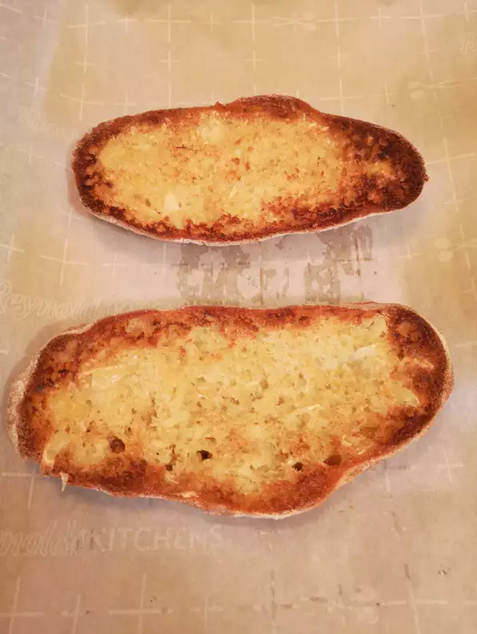

Roasted Garlic Bread

Might look like plain toast, but it has a pleasant surprise in store
INGREDIENTS
- 3 heads of garlic
- 2 tablespoons olive oil
- 1 (1 pound) loaf Italian bread
- 1/2 cup butter
- 1 tablespoon chopped fresh parsley (optional)
- 2 tablespoons grated Permesan cheese (optional)
DIECTIONS
- Preheat over to 350 degrees F (175 degrees C). Slice the tops off of the garlic heads so the tip of each clove is exposed. Place
garlic on a baking sheet and drizzle with olive oil. Bake until garlic is soft, about 30 minutes
- Set oven to broil. Slice the loaf of bread in half horizontally, and place cut side up on a baking sheet
- Squeeze the cloves of garlic from their skins into a medium bowl. Stir in the butter, parsley, and Parmesan cheese until well blended.
Spread onto the cut sides of the bread
- Broil bread until toasted, about 5 minutes